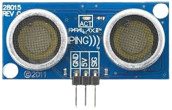

HC-SR04 / Sensor Ping

El sensor de distancia ultrasónico se utiliza para medir distancias mediante ondas ultrasónicas. Su funcionamiento se basa en el tiempo que tarda el sonido en ir y regresar después de rebotar en un objeto.
Como se puede observar en la imagen, el sensor tiene tres conexiones principales:
Se conecta a la línea negativa del protoboard (tierra).
Se conecta a la línea positiva del protoboard (alimentación).
Se conecta a un pin digital de Arduino para enviar y recibir señales.
El proceso de medición de distancia con ultrasonido sigue los siguientes pasos:
Distancia (cm) = (Tiempo en microsegundos × 0.034) / 2
El valor 0.034 corresponde a la velocidad del sonido (340 m/s = 0.034 cm/µs), y se divide entre 2 porque el sonido recorre la distancia dos veces (ida y vuelta).
A continuación se muestra un programa básico para medir distancias con el sensor ultrasónico:
long tiempo;
int distancia;
int pinSensor = 7;
void setup() {
Serial.begin(9600); // Inicializa comunicación serial
}
void loop() {
// Configurar el pin como salida y enviar pulso
pinMode(pinSensor, OUTPUT);
digitalWrite(pinSensor, LOW);
delayMicroseconds(2);
digitalWrite(pinSensor, HIGH);
delayMicroseconds(10);
digitalWrite(pinSensor, LOW);
// Configurar el pin como entrada y leer el eco
pinMode(pinSensor, INPUT);
tiempo = pulseIn(pinSensor, HIGH);
// Calcular la distancia
distancia = tiempo * 0.034 / 2;
// Mostrar resultado en el monitor serial
Serial.print("Distancia: ");
Serial.print(distancia);
Serial.println(" cm");
delay(500); // Esperar medio segundo
}• pulseIn(): Mide el tiempo que el pin permanece en HIGH (cuando recibe el eco).
• Serial.begin(9600): Inicializa la comunicación serial para ver los resultados en el monitor.
• delayMicroseconds(): Crea pulsos muy cortos medidos en microsegundos.
Puedes observar el funcionamiento del sensor y probar el código en un entorno virtual antes de implementarlo físicamente.